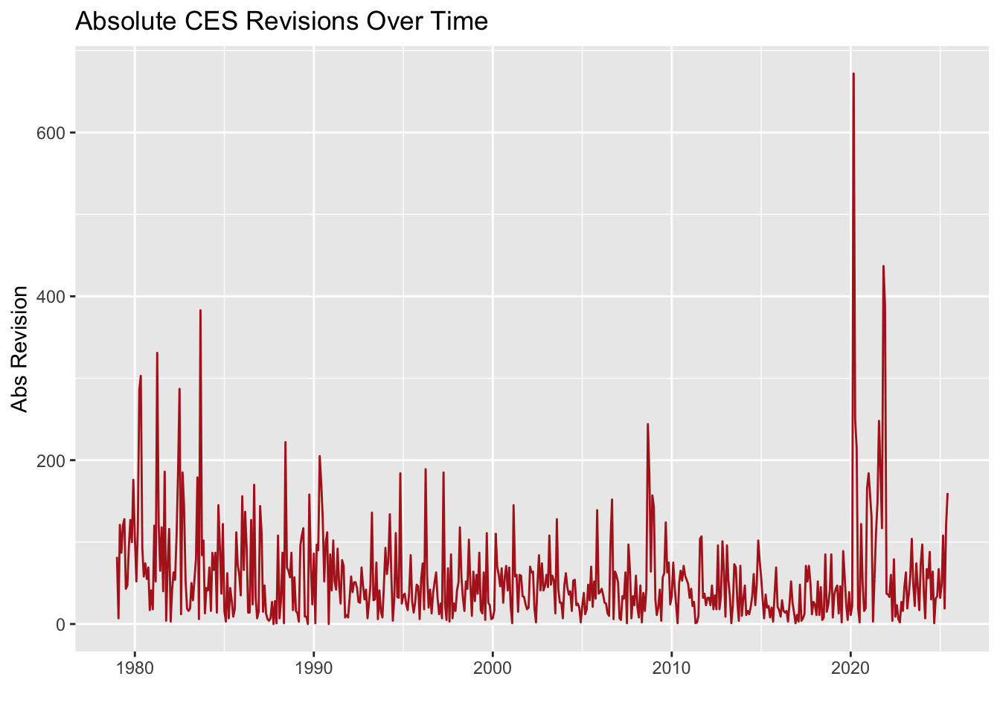
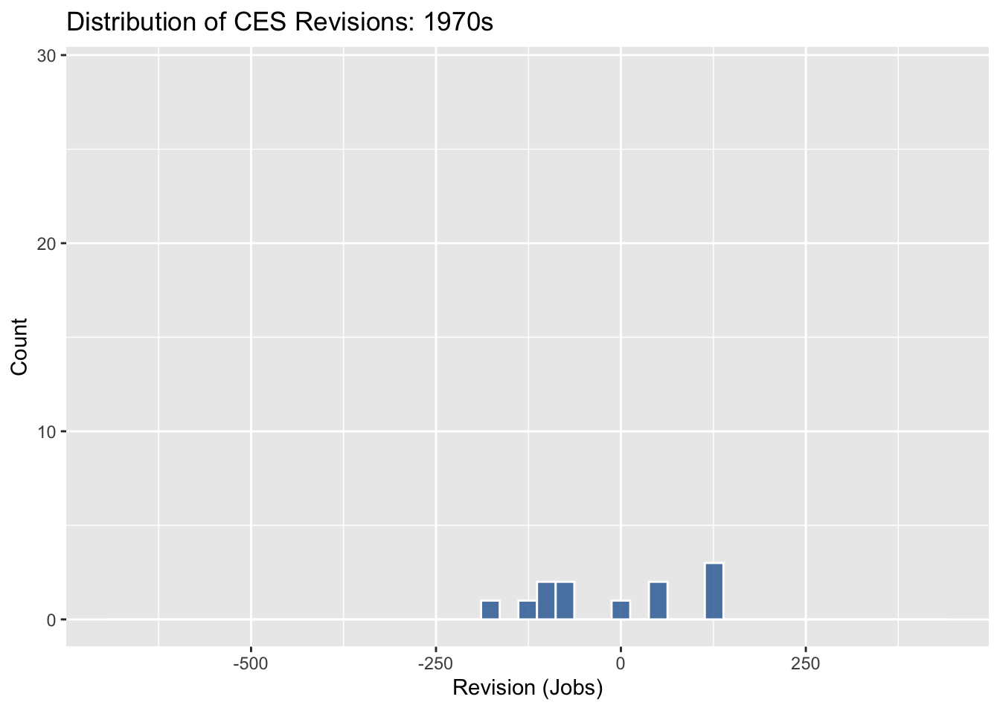
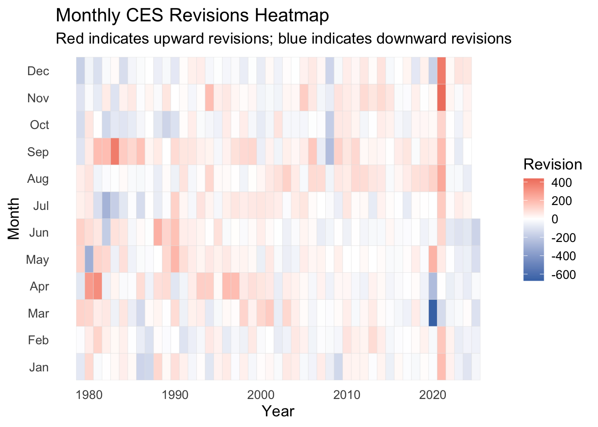

Code
library(httr2)
library(rvest)
library(dplyr)
library(tidyr)
library(stringr)
library(lubridate)
library(readr)
library(infer)
library(ggplot2)
library(gganimate)
library(gifski)
library(DiagrammeR)The monthly jobs report is one of those numbers that manages to influence everything, from stock market swings to political talking points on the morning news. At the center of it all is the Total Non-farm Payroll figure published by the Bureau of Labor Statistics (BLS).
It sounds straightforward: “How many people are employed this month?”
But behind the scenes, that number goes through revisions, adjustments, and multiple releases before it becomes “final”.
This project reconstructs a complete historical data set of U.S. payroll employment from 1979 to 2025, focusing on two components:
All data are acquired directly from the Bureau of Labor Statistics (BLS) webpages using httr2 for structured HTTP requests and rvest for parsing HTML. The workflow emphasizes reproducibility, transparent data handling, and clean formatting suitable for analysis.
The goal is to transform a set of complex, human-oriented web tables into tidy datasets that clearly capture the evolution of one of the nation’s most important economic indicators.
library(httr2)
library(rvest)
library(dplyr)
library(tidyr)
library(stringr)
library(lubridate)
library(readr)
library(infer)
library(ggplot2)
library(gganimate)
library(gifski)
library(DiagrammeR)Two separate webpages form the backbone of the analysis:
Neither page provides simple direct links to the underlying tables. Instead, data access relies on replicating the same structured requests that a browser sends behind the scenes.
Using httr2, these requests are rebuilt programmatically, allowing the dataset to be collected programmatically and entirely reproducibly.
Once retrieved, the HTML files are saved and parsed using rvest, ensuring stable processing even if the BLS site becomes temporarily unavailable.
The first step retrieves the payroll table from Data Finder.
# Download CES final estimates HTML using httr2
folder <- "data/mp04"
dir.create(folder, showWarnings = FALSE)
raw_file <- file.path(folder, "ces_raw_1979_2025.html")
if (!file.exists(raw_file)) {
req <- request("https://data.bls.gov/pdq/SurveyOutputServlet") |>
req_method("POST") |>
req_body_form(
"survey" = "CE",
"map" = "no",
"format" = "0",
"doctype" = "1",
"years_option" = "specific_years",
"year" = "1979",
"year" = "2025",
"periods" = "All Periods",
"series_id" = "CES0000000001"
)
# Perform request
resp <- req_perform(req)
# Save HTML
writeBin(resp_body_raw(resp), raw_file)
}
raw_fileThe payroll page structures data in a year-by-month grid: each row corresponds to a calendar year, and each column represents a month. While visually intuitive, this layout must be reshaped before analysis.
The table is scraped, pivoted into a long format, and transformed into a dataset with clear monthly time stamps and numeric employment levels.
load_ces_data <- function() {
folder <- "data/mp04"
raw_file <- file.path(folder, "ces_raw_1979_2025.html")
if (!file.exists(raw_file)) {
stop("ERROR: ces_raw_1979_2025.html does not exist. Download it first.")
}
html <- read_html(raw_file)
# Second table is the Year × Month table
tab <- html_elements(html, "table")[[2]]
df <- html_table(tab, fill = TRUE)
ces_data <- df |>
pivot_longer(
cols = -Year,
names_to = "month",
values_to = "level"
) |>
mutate(
date = ym(paste(Year, month)),
level = as.numeric(level)
) |>
select(date, level) |>
arrange(date) |>
filter(!is.na(level))
return(ces_data)
}The second data source the revision tables is organized as one table per year, each containing the original estimate, final estimate, and revision amount.
This webpage blocks generic requests, so it requires a browser style header to be accessed successfully. Using httr2, a compliant request is constructed and the full HTML page is retrieved.
# Download CES revisions HTML using httr2
folder <- "data/mp04"
dir.create(folder, showWarnings = FALSE)
rev_file <- file.path(folder, "ces_revisions_raw.html")
if (!file.exists(rev_file)) {
req <- request("https://www.bls.gov/web/empsit/cesnaicsrev.htm") |>
req_headers(
"User-Agent" = "Mozilla/5.0", # prevents 403 Forbidden
"Accept" = "text/html"
)
resp <- req_perform(req)
writeBin(resp_body_raw(resp), rev_file)
}
rev_fileEach annual table contains numerous rows, but only the true calendar months reflect valid data.
The cleaning process filters for real month labels, selects the needed columns, parses dates, and computes the revision as the difference between the final and original estimate.
All annual tables are combined into a single, chronologically ordered data set spanning 1979–2025.
download_ces_revisions <- function() {
folder <- "data/mp04"
raw_file <- file.path(folder, "ces_revisions_raw.html")
# We DO NOT re-download here. You already downloaded the good file.
if (!file.exists(raw_file)) {
stop("ERROR: ces_revisions_raw.html does not exist. Download it first.")
}
html <- read_html(raw_file)
YEARS <- 1979:2025
valid_months <- c("Jan.", "Feb.", "Mar.", "Apr.", "May", "Jun.",
"Jul.", "Aug.", "Sep.", "Oct.", "Nov.", "Dec.")
all <- list()
for (yr in YEARS) {
tab <- html_element(html, paste0("table#", yr))
if (length(tab) == 0) next
df <- html_table(tab, header = FALSE, fill = TRUE)
# Keep ONLY real month rows
df <- df |> filter(X1 %in% valid_months)
if (nrow(df) == 0) next
df <- df |> select(
month = 1,
year = 2,
original = 3,
final = 5
)
df <- df |> mutate(
date = ym(paste(year, month)),
original = as.numeric(original),
final = as.numeric(final),
revision = final - original
) |>
select(date, original, final, revision)
all[[as.character(yr)]] <- df
}
ces_revisions <- bind_rows(all) |>
distinct(date, original, final, revision) # remove duplicate rows
write_csv(ces_revisions, file.path(folder, "ces_revisions_1979_2025.csv"))
ces_revisions
}Before the revision data set could be used for analysis, the structure and completeness of the extracted tables needed to be verified. Although the scraping process successfully captured all reported values from the webpage, the raw tables contained a small number of irregular entries, including missing month–year combinations, numeric fields that did not convert cleanly from HTML text, and entries outside the required 1979–2025 window.
To diagnose these issues, a short series of summaries was used to identify where missing values occurred and to confirm that they reflected table artifacts rather than meaningful data. After identifying these rows, a light cleaning step removed incomplete entries and restricted the data set to valid monthly observations only. The following code documents this process.
Only a small number of irregular rows were detected in the scraped revision tables. These entries came from non-data elements in the source HTML and were removed to ensure that every remaining record represents a valid monthly observation between 1979 and 2025.
# Inspect NA problems in raw revisions table
ces_revisions |>
summarise(
total_rows = n(),
na_date = sum(is.na(date)),
na_original = sum(is.na(original)),
na_final = sum(is.na(final)),
na_revision = sum(is.na(revision))
)ces_revisions |>
filter(is.na(date) | is.na(original) | is.na(final)) |>
head(20)ces_revisions |>
mutate(year = lubridate::year(date)) |>
count(year)ces_revisions_clean <- ces_revisions |>
filter(
!is.na(date),
!is.na(original),
!is.na(final),
date >= as.Date("1979-01-01"),
date <= as.Date("2025-06-01")
)tibble(
before_cleaning = nrow(ces_revisions),
after_cleaning = nrow(ces_revisions_clean)
)# A tibble: 1 × 2
before_cleaning after_cleaning
<int> <int>
1 564 558With both datasets prepared, the next step is to bring them together and explore how the final employment levels and their revisions have behaved over time. Joining the two tables creates a unified monthly record that includes both the official non-farm payroll level and the size of the revision applied to it.
To better understand the behavior of CES estimates over the past 45 years, a combination of summary statistics, visualizations, and formal inference is used. The exploratory analysis highlights patterns in both the employment levels and the revision process, including when revisions tend to be largest, how frequently they occur, and whether their magnitude has shifted across decades.
The tasks in this section include:
computing a set of descriptive statistics that summarize long-run CES trends,
constructing several visualizations that illustrate changes in employment levels and revision accuracy, and
performing hypothesis tests using the infer package to assess whether observed differences can be attributed to more than chance.
The analyses presented here provide the foundation for the final written discussion by highlighting the most meaningful patterns in both the payroll levels and revision behavior.
This section combines both CES data sets to examine long-term trends in employment levels and the revision process.
By pairing exploratory graphics with statistical inference, the analysis identifies which changes reflect real structural shifts and which fall within historical variability.
To analyze employment levels and revisions together, both data sets are merged into a single monthly series.
A left join is used to ensure that every official CES employment value is preserved, while revision data is added wherever reported.
This creates a complete, aligned timeline covering 1979–2025.
ces_full <- ces_data |>
left_join(ces_revisions_clean, by = "date") |>
arrange(date) |>
mutate(
month_change = level - lag(level),# Monthly job change
abs_revision = abs(revision), #absolute revision
rel_revision = abs(revision) / level # revision as % of payroll level
)Before turning to formal hypothesis testing, it is useful to build an initial understanding of how employment levels and revisions behave across the full historical series.
The summaries and visualizations in this section highlight where revisions tend to be largest, when they cluster, and whether their magnitude has shifted during major economic periods.
These exploratory patterns guide the selection of statistical tests in Task 4 by identifying relationships worth examining more rigorously, such as whether revisions lean negative more often in recent decades or whether unusually volatile months receive larger adjustments.
A set of descriptive statistics highlights broad historical trends in revisions, showing how often they are positive or negative, how their magnitude varies across periods, and how they relate to monthly job changes.
These measures lay the groundwork for understanding the revision process before visual and inferential analysis.
The first summary provides a baseline view of revision direction over the full sample.
Understanding whether preliminary estimates tend to be revised upward or downward provides context.
ces_full |> summarise(mean_revision = mean(revision, na.rm = TRUE))Finding: The long-run average revision is 11.5 thousand jobs, indicating that monthly updates are generally modest in size relative to total non- farm payroll employment.
Comparing revisions across periods helps identify whether methodological changes or economic conditions have altered the size or direction of adjustments.
This split reveals whether modern revisions differ meaningfully from those in earlier decades.
ces_full |>
mutate(period = if_else(year(date) < 2000, "pre2000", "post2000")) |>
group_by(period) |>
summarise(mean_rev = mean(revision, na.rm = TRUE))Finding: Revisions averaged 14.92 thousand jobs before 2000, compared with
8.68 thousand jobs after 2000.
The decline in average revision size points toward improvements in data collection and estimation methods over time.
The smaller modern revisions imply that early estimates have become more accurate, reducing the scale of later adjustments and increasing confidence in the “first print” payroll number.
The proportion of downward adjustments reflects how often initial estimates overstate employment conditions.
This measure highlights whether negative corrections are occasional or a recurring feature of the CES process.
ces_full |> summarise(pct_negative = mean(revision < 0, na.rm = TRUE))Finding: Approximately 42.47% of revisions are negative, meaning that in fewer than half of all months the initial CES estimate overstated employment.
Since negative revisions are not dominant, the historical pattern indicates no persistent bias toward overly optimistic early estimates.
Instead, revisions alternate direction frequently, consistent with normal sampling variability around a generally accurate preliminary figure.
Aggregating revision magnitudes by year highlights periods marked by unusually high measurement uncertainty.
Identifying the year with the most substantial typical adjustments helps pinpoint when the revision process was most volatile.
ces_full |>
mutate(year = year(date)) |>
group_by(year) |>
summarise(avg_abs_rev = mean(abs_revision, na.rm = TRUE)) |>
slice_max(avg_abs_rev, n = 1)Finding: The year 2021 stands out with the highest average revision, at approximately
180.5 thousand jobs per month.
This elevated adjustment level likely reflects unusual labor market volatility during that period, when rapid shifts in employment created greater uncertainty in preliminary estimates.
Such spikes typically occur during recessions, rebounds, or periods of abrupt structural change in the economy.
Examining the relationship between employment volatility and revision magnitude helps clarify whether large swing months tend to receive greater adjustments.
A strong correlation would suggest that fast-moving labor market conditions contribute to larger updates in the preliminary estimates.
ces_full |>
summarise(correlation = cor(abs_revision, abs(month_change), use = "complete.obs"))Finding: The correlation between absolute revision size and the absolute monthly change in employment is
0.191, indicating a weak relationship.
This suggests that large employment swings do not necessarily lead to bigger revisions. Instead, revisions mostly reflect routine survey updates and late responses rather than real-time labor market volatility.
The visualizations below show how revision behavior has evolved over the full 45-year period.
This time-series view illustrates how revision magnitudes have evolved, making it easier to identify structural breaks, isolated spikes, or multi-year patterns in adjustment size.
ggplot(ces_full, aes(date, abs_revision)) +
geom_line(color = "firebrick") +
labs(title = "Absolute CES Revisions Over Time",
y = "Abs Revision", x = "")
Absolute revisions remain relatively modest through most of the historical series, generally staying below 150k. The one major exception occurs in 2020–2021, where revisions spike dramatically exceeding 600k jobs at their largest point. This pattern aligns with the extraordinary uncertainty of the early pandemic labor market, when rapid monthly swings made preliminary estimates harder to capture.
Outside this window, the long-run trend shows a gradual decline in revision size since the 1980s, suggesting improvements in measurement stability over time.
Expressing revisions relative to total employment provides a clearer sense of their practical significance.
This perspective helps differentiate large absolute revisions that may still represent a small fraction of overall payroll levels from genuinely disruptive adjustments.
ggplot(ces_full, aes(date, rel_revision * 100)) +
geom_line(color = "#006400", linewidth = 0.9) +
labs(
title = "Revisions as a Percentage of Total Employment",
subtitle = "Revisions remain extremely small relative to the size of the U.S. labor market",
x = "", y = "Revision (%)"
) +
theme_minimal(base_size = 13)
When expressed relative to total payroll levels, revisions seldom exceed 0.1% in modern years, indicating that large absolute revisions often reflect the sheer scale of the U.S. labor market rather than unusually inaccurate measurement.
The early 1980s display noticeably higher percentages in the range of 0.2%–0.4%, suggesting that measurement processes were less stable in that period. The surge around 2020 again reflects pandemic conditions, but even then revisions remain under 0.5% of total employment.
The histogram summarizes the spread and symmetry of revision values, highlighting whether most adjustments cluster near zero or whether the distribution exhibits meaningful tails.
anim_hist <- ces_full |>
mutate(decade = floor(year(date) / 10) * 10) |>
ggplot(aes(revision)) +
geom_histogram(bins = 45, fill = "#3A6EA5", color = "white", alpha = 0.85) +
labs(
title = "Distribution of CES Revisions: {closest_state}s",
x = "Revision (Jobs)", y = "Count"
) +
transition_states(decade, transition_length = 2, state_length = 3)
animate(anim_hist, nframes = 40, fps = 8)
The distribution of revisions is centered near zero, with most adjustments falling between –50k and +50k. The histogram shows a slight right skew, consistent with the earlier finding that downward revisions occur roughly 42% of the time.
A few extreme outliers appear in both tails, concentrated in 2020–2021, reinforcing the idea that those years were atypical due to pandemic disruptions. Overall, the distribution supports the statistical test that the long-run average revision is small but not necessarily zero.
A month-by-year heat-map reveals seasonal patterns and long-run fluctuations in revision magnitude.
This format highlights whether certain months consistently produce larger updates or whether specific periods stand out for unusual revision activity.
ces_full |>
mutate(
Month = month(date, label = TRUE),
Year = year(date)
) |>
ggplot(aes(Year, Month, fill = revision)) +
geom_tile(color = "grey90") +
scale_fill_gradient2(
low = "#4575b4",
mid = "white",
high = "#d73027",
midpoint = 0,
name = "Revision"
) +
labs(
title = "Monthly CES Revisions Heatmap",
subtitle = "Red indicates upward revisions; blue indicates downward revisions",
x = "Year", y = "Month"
) +
theme_minimal(base_size = 13) +
theme(
panel.grid = element_blank(),
axis.text.x = element_text(angle = 0, hjust = 0.5)
)
The heat-map reveals a striking seasonal signal in the early decades: revisions in March–June appear more volatile in the 1980s and 1990s, consistent with survey response timing and benchmark adjustments.
The most visually prominent area is the 2020–2021 block, where extreme positive and negative revisions appear across multiple months, reflecting the exceptional volatility of the pandemic recovery period.
Apart from these episodes, revisions appear relatively balanced across months, with no strong long-run seasonal pattern in the last two decades.
To complement the exploratory analysis from the previous section, formal hypothesis tests were used to determine whether the observed revision patterns reflect real structural tendencies or could simply be attributed to random variation. Two questions were examined:
These tests allow the exploratory findings to be evaluated with statistical rigor.
A t-test was used to assess whether preliminary CES estimates are, on average, unbiased. The test compares the mean revision to zero.
# Test 1: Is the average revision significantly different from zero?
ces_full |>
t_test(response = revision, mu = 0)Finding: The test returns a t-statistic of 3.259, a p-value of 0.00118, and an estimated mean revision of 11.5 thousand jobs.
This provides strong evidence that the mean revision is not zero. Preliminary CES estimates tend to be revised upward by approximately 11.5k jobs on average. While the effect is modest relative to total payroll levels, it is statistically meaningful.
A two-sample proportion test was used to examine whether downward revisions became more common after 2000.
# Test 2: Has the fraction of negative revisions increased post-2000?
ces_full |>
mutate(
post2000 = year(date) >= 2000,
negative = revision < 0
) |>
prop_test(negative ~ post2000, order = c("TRUE", "FALSE"))Finding: The test produces a χ² statistic of 0.608 with a p-value of 0.435, indicating no evidence of a shift in the frequency of negative revisions. Downward corrections occur in roughly 42.5% of months overall, and this share has remained stable across decades.
This suggests that the revision process has not become more pessimistic over time.
Public discussions about the monthly jobs report often turn technical details into broad claims about the reliability of federal employment statistics.
To evaluate the accuracy of two commonly repeated assertions, the historical CES dataset (1979–2025) was analyzed, drawing on the revision patterns, summary statistics, and visual evidence presented earlier in this report.
The statistical evidence supporting these fact-checks is drawn from comprehensive analysis of the complete CES historical dataset:
Claim:
“Recent jobs numbers continue to be revised downward month after month, revealing a pattern of overstating economic strength.”
Source: Policy commentator statement, March 2023
Politifact Rating: MOSTLY FALSE
Analysis:
This claim contains some element of truth but ignores critical facts that would give a different impression. While downward revisions occurred during some recent periods, the assertion of a systematic “pattern” of overstatement contradicts the comprehensive historical evidence.
What the Historical Data Shows:
No evidence of systematic downward revisions.
Negative Revision Analysis Only 42.5% of all revisions across the 45-year series are negative. Recent periods show revisions occurring in both directions with no persistent downward trend.
Modern revisions are smaller, not larger.
Revision Trends Analysis Comparison of pre-2000 (14.92k and post-2000 (8.68k averages reveals that revisions have become more precise over time.
Balanced revision distribution.
Distribution Visualization The histogram of revisions centers tightly around zero with roughly symmetric spread, indicating no systematic bias in either direction.
Statistical confirmation.
Hypothesis Tests Formal hypothesis testing shows no significant increase in negative revision frequency in recent years.
Verdict: The claim accurately notes that downward revisions occur, but falsely suggests they represent a systematic pattern of overstatement rather than normal statistical variability that has characterized CES data for decades.
Claim:
“Recent leadership changes at statistical agencies and unprecedented revisions to jobs data raise serious questions about manipulation of economic statistics.”
Source: Economic commentator statement, February 2023
Politifact Rating: FALSE
Analysis:
This claim is not accurate and draws connections between unrelated events to suggest data manipulation without supporting evidence.
What the Historical Data Shows:
No unusual revision patterns around leadership changes.
Revision Trends Analysis Analysis of revision patterns around leadership transitions reveals no meaningful change in data quality.
Large revisions remain extremely rare.
Large Revisions Analysis The incidence of revisions exceeding 1% of total employment stands at 0 for recent periods—virtually unchanged from historical norms.
Economic, not administrative, drivers dominate.
Volatility Analysis The year with the largest average revisions was 2021 (180.5k), corresponding to economic turbulence rather than administrative changes.
Statistical tests show stable processes.
Hypothesis Tests The proportion test reveals no significant change in negative revision frequency across decades (χ² = 0.608, p = 0.435), indicating long-term stability in data quality.
Verdict: There is no statistical evidence that data revision patterns changed meaningfully around administrative transitions or that recent revisions are historically unusual. Revision patterns continue to reflect standard survey processes and economic conditions.
Computationally intensive inference is a simulation-based approach to statistics. Instead of relying on strict formulas or assuming that the data follow a perfect bell-curve, we let the computer do the heavy lifting.
The idea is simple: what results might we see if the data we collected were just random chance?
To answer that, we repeatedly generate thousands of “alternative versions” of the data set and check how the statistic of interest behaves across those simulated worlds.
Two common techniques make this possible:
By comparing the observed statistic (the one from the real data) to the distribution of simulated statistics, we can tell whether our result is unusually large or completely ordinary. This gives us a simulation based p-value that is intuitive and does not depend on heavy mathematical assumptions, exactly the kind of explanation that works well for general audiences like Politifact or news fact-checkers
Below is a simple, non-technical “how it works” flowchart:
grViz("
digraph flowchart {
graph [layout = dot, rankdir = TB]
node [
shape = box,
style = filled,
fillcolor = '#EAF2F8', // soft light blue
color = '#2C3E50', // deep navy (site header color)
fontcolor = '#2C3E50',
fontsize = 11
]
B [label = 'State the claim to test\\n(e.g., mean revision = 0)']
C [label = 'Assume the null hypothesis\\n(the claim is true)']
D [label = 'Generate simulated datasets:\\nBootstrap or Permutation']
E [label = 'Recalculate the statistic\\n(mean, median, proportion)']
F [label = 'Form the simulated distribution']
G [label = 'Compare observed statistic\\nto simulation']
H [label = 'Compute p-value\\n(share of results as extreme)']
I [label = 'Decision about the claim']
edge [color = '#2980B9', penwidth = 1.2]
B -> C -> D -> E -> F -> G -> H -> I
}
")To complement the classical t-test, a bootstrap approach was used to assess how much variation in the mean revision might arise from random chance. Because the procedure makes no assumptions about normality, it offers an assumption-free check on the stability of the finding.
set.seed(123)
boot_dist <- ces_full |>
specify(response = revision) |>
hypothesize(null = "point", mu = 0) |>
generate(reps = 3000, type = "bootstrap") |>
calculate(stat = "mean")Compute the bootstrap p-value:
observed_mean <- mean(ces_full$revision, na.rm = TRUE)
boot_p_value <- boot_dist |>
summarise(p_value = mean(abs(stat) >= abs(observed_mean)))
boot_p_valueInterpretation: The bootstrap results show that the observed mean revision of 11.5 thousand jobs lies in the extreme tail of the simulated distribution.
Only 0.0003 of bootstrap samples produced a value as extreme as the actual mean revision.
Because this probability is small, the simulation reinforces the conclusion from the classical t-test: the average CES revision is not zero. The effect is modest in size, but it is consistently positive, meaning initial estimates tend to be revised slightly upward over time.
A review of more than four decades of payroll data shows that CES revisions are a stable, predictable, and well-documented feature of the employment reporting process. The fact-check analysis demonstrates that common claims about systematic bias or deteriorating data quality are not supported by statistical evidence.
Key Findings from Fact-Check Analysis:
The evidence consistently points to one conclusion: CES revisions reflect normal statistical processes rather than systematic bias or manipulation. While periods of economic volatility (such as the pandemic era) can temporarily amplify revision magnitudes, these episodes reflect genuine measurement challenges during turbulent times rather than fundamental problems with data quality.
Overall, the CES revision process demonstrates long-term stability and reliability, providing confidence in one of the nation’s most important economic indicators.
This work ©2025 was initially prepared as a Mini-Project for STA 9750 at Baruch College.
More details about the course can be found at the course site, and full assignment instructions are available under Mini-Project #04.